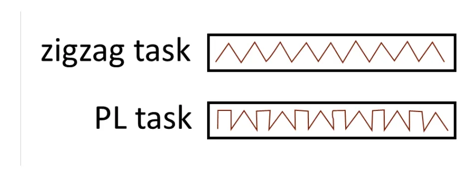
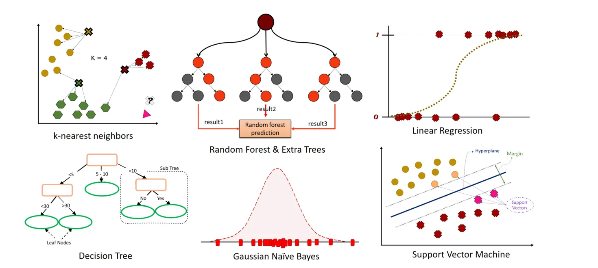

Course project
ADHD Detection from Handwriting in Children with ASD
Reproduced a published handwriting study and extended it with a classifier ensemble. Found that the original evaluation leaked each child's drawings into training, and measured the real accuracy: about 78%, not 93%.
- When
- Sep 2023 – Jan 2024
- Course
- Research and Presentation Methods
- Course grade
- 20 / 20
- Team
- With M. M. Naseri (co-author)
Overview
Spotting ADHD in children who also have autism spectrum disorder (ASD) is difficult. A study published in IEEE Access (2023) recorded 29 Japanese children (14 with ADHD and ASD, 15 typically developing) drawing zigzag and periodic lines on a digital tablet, three times each, and classified them from pen features. The authors published their data and code, and our course project built on them.
What I did
- Reproduced the original pipeline: z-score standardisation, Sequential Forward Floating Search (SFFS) for feature selection, and the seven original classifiers (SVM, Random Forest, Decision Tree, Gaussian Naive Bayes, KNN, Logistic Regression, Extra Trees).
- Tried four more classifiers (Gradient Boosting, AdaBoost, MLP, Ridge), each tuned with grid search. None beat the original models.
- Combined models across the four drawing tasks by majority vote.
- Wrote the work up as an IEEE-style paper with a co-author.
What I found
- The leak: each child drew every pattern three times. The released code tests one drawing at a time (leave-one-out over all 87 drawings), so the same child's other two drawings stay in the training data, and a model can recognise the child instead of learning signs of ADHD. The paper describes holding out whole subjects, but the code holds out single drawings.
- The honest number: holding out all three drawings of a child together, with feature selection and tuning kept inside each fold, the original study's best model scores 78% per drawing and 86% per child, against the reported 93.1%. Always guessing the larger group gives 52%.
- Under the same per-child evaluation, combining models did not beat the best single model.
- Handwriting still carries a real signal, well above chance; the published figure overstates it.
- Lesson: when one person contributes several samples, test on people the model has never seen, and keep every choice (features, settings, which models to combine) away from the test data.
Written as practice for a credited course; not published. The per-child re-evaluation was done in 2026 and checked independently.
Gallery

